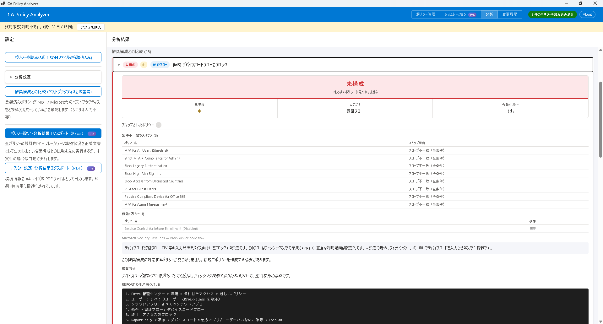

CA Policy Analyzer ユーザーマニュアル

ギャップ分析の結果を踏まえて、ポリシー全体の「設計カバレッジ」を評価する機能です。
個々の推奨項目の適合状況だけでなく、ポリシーの組み合わせで保護されていないシナリオ（設計上の隙間）を検出します。これにより、個別のポリシーは正しく構成されていても、全体として見たときに残るセキュリティリスクを可視化できます。
ポリシーが個別には正しくても、組み合わせによって保護されないケースを特定します。
次の 5 種類について、無効ではないポリシー（有効とレポート専用）全体で保護が成り立っているかを確かめます。
検出された設計不備は、ステータス 設計不備 として表示されます。
全ユーザーを対象にしたポリシーの多く（全体の 7 割〔小数点以下切り捨て〕以上、かつ 2 件以上）から同じグループが除外されている場合、そのグループを「除外グループ: グループ名」として表示します。「グループ『○○』が全ユーザー対象ポリシー 10 件中 8 件から除外されています」のように件数を示し、除外しているポリシー名と、そのグループが受けられていない保護も確認できます。個々のポリシーの除外は意図どおりでも、重なると一部のユーザーが MFA などをまとめて逃れる、という穴を見つけるための項目です。
多くの組織では、管理者グループをセキュリティポリシーから除外しています。この分析では、以下の観点から管理者の保護状況を評価します:
管理者グループ名は「分析設定」で登録してください。正確な分析にはグループ名の設定が必要です。
管理者を除外しているポリシーが 1 件以上あると、「分析」タブの結果に「管理者除外分析」の欄が表示され、次の内容を確認できます。
改善後の値は、管理者の除外による不足が解消されたと仮定して計算した見込みです。管理者保護の強化がどの程度の改善につながるかを、対策前に把握できます。
CA Policy Analyzer User Manual
Coverage Analysis evaluates the overall "design coverage" of your policies, building on the results of the Gap Analysis.
Rather than only checking compliance of individual recommendations, it detects scenarios that are not protected by any combination of policies (design gaps). This allows you to visualize security risks that remain when looking at your policies as a whole, even if each individual policy is correctly configured.
Identifies cases where policies are individually correct but fail to provide protection when combined.
It checks whether your policies that are not disabled (enabled and report-only), taken together, provide the following five protections:
Detected design flaws are displayed with the status Design Flaw.
When the same group is excluded from most of your all-user policies (at least 70% of them, rounded down, and at least two), it is listed as "Excluded group: group name." The entry shows the count, for example "Group 'Contractors' is excluded from 8 out of 10 all-user policies," along with the names of the excluding policies and the protections the group is missing. Each exclusion may be intentional on its own, but together they can let some users skip MFA and other controls entirely. This item is designed to surface that kind of gap.
Many organizations exclude administrator groups from security policies. This analysis evaluates the protection status of administrators from the following perspectives:
Register your administrator group name in "Analysis Settings." Accurate analysis requires the group name to be configured.
When at least one policy excludes administrators, the results in the Analysis tab include an "Administrator Exclusion Analysis" panel showing:
The "after" values are projections calculated on the assumption that the gaps caused by excluding administrators are resolved. They let you see how much strengthening administrator protection would help before you make the change.